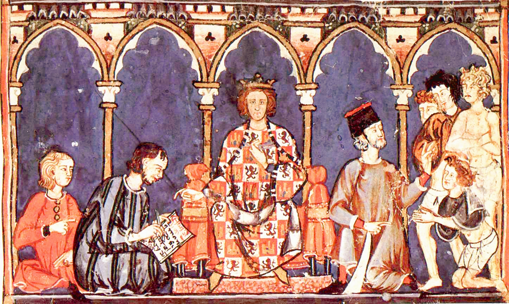
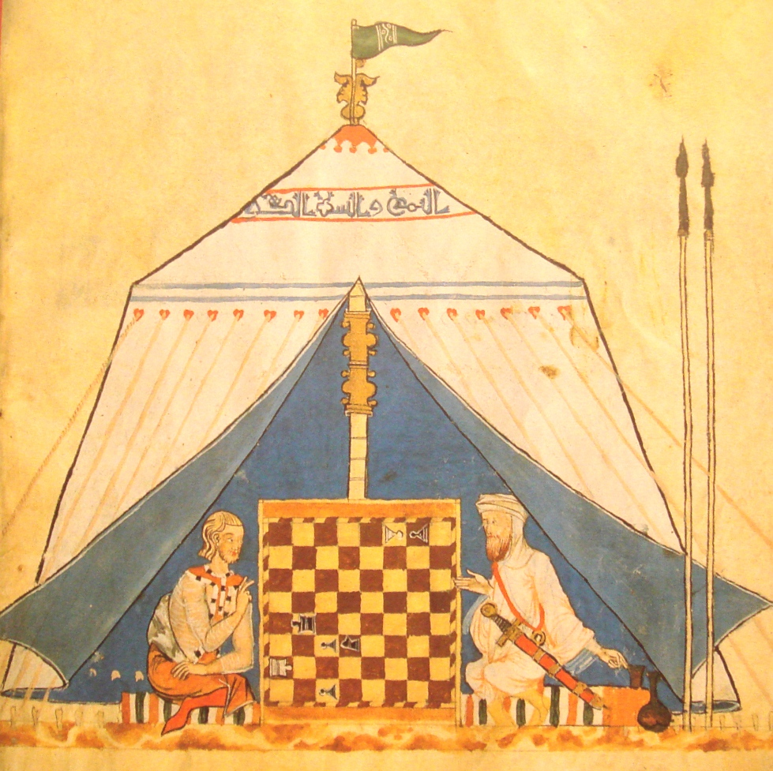
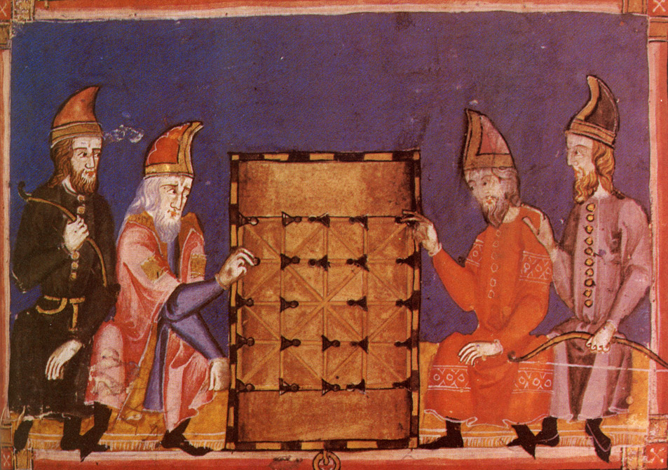

Alfonso X and his court

Christian and muslim playing chess

The game of alquerque
The Libro de los juegos (Spanish: "Book of games"), or Libro de axedrez, dados e tablas ("Book of chess, dice and tables", in Old Spanish), is a 13th century Spanish treatise of chess that synthesizes the information from Arabic works on this same topic, dice and tables (backgammon forebears) games, The Libro de los juegos (Spanish: "Book of games"), or Libro de axedrez, dados e tablas ("Book of chess, dice and tables", in Old Spanish), is a 13th century Spanish treatise of chess that synthesizes the information from Arabic works on this same topic, dice and tables (backgammon forebears) games, The Libro de los juegos (Spanish: "Book of games"), or Libro de axedrez, dados e tablas ("Book of chess, dice and tables", in Old Spanish), is a 13th century Spanish treatise of chess that synthesizes the information from Arabic works on this same topic, dice and tables (backgammon forebears) games, The Libro de los juegos (Spanish: "Book of games"), or Libro de axedrez, dados e tablas ("Book of chess, dice and tables", in Old Spanish), is a 13th century Spanish treatise of chess that synthesizes the information from Arabic works on this same topic, dice and tables (backgammon forebears) games, The Libro de los juegos (Spanish: "Book of games"), or Libro de axedrez, dados e tablas ("Book of chess, dice and tables", in Old Spanish), is a 13th century Spanish treatise of chess that synthesizes the information from Arabic works on this same topic, dice and tables (backgammon forebears) games, The Libro de los juegos (Spanish: "Book of games"), or Libro de axedrez, dados e tablas ("Book of chess, dice and tables", in Old Spanish), is a 13th century Spanish treatise of chess that synthesizes the information from Arabic works on this same topic, dice and tables (backgammon forebears) games, The Libro de los juegos (Spanish: "Book of games"), or Libro de axedrez, dados e tablas ("Book of chess, dice and tables", in Old Spanish), is a 13th century Spanish treatise of chess that synthesizes the information from Arabic works on this same topic, dice and tables (backgammon forebears) games, The Libro de los juegos (Spanish: "Book of games"), or Libro de axedrez, dados e tablas ("Book of chess, dice and tables", in Old Spanish), is a 13th century Spanish treatise of chess that synthesizes the information from Arabic works on this same topic, dice and tables (backgammon forebears) games, The Libro de los juegos (Spanish: "Book of games"), or Libro de axedrez, dados e tablas ("Book of chess, dice and tables", in Old Spanish), is a 13th century Spanish treatise of chess that synthesizes the information from Arabic works on this same topic, dice and tables (backgammon forebears) games, The Libro de los juegos (Spanish: "Book of games"), or Libro de axedrez, dados e tablas ("Book of chess, dice and tables", in Old Spanish), is a 13th century Spanish treatise of chess that synthesizes the information from Arabic works on this same topic, dice and tables (backgammon forebears) games, The Libro de los juegos (Spanish: "Book of games"), or Libro de axedrez, dados e tablas ("Book of chess, dice and tables", in Old Spanish), is a 13th century Spanish treatise of chess that synthesizes the information from Arabic works on this same topic, dice and tables (backgammon forebears) games, The Libro de los juegos (Spanish: "Book of games"), or Libro de axedrez, dados e tablas ("Book of chess, dice and tables", in Old Spanish), is a 13th century Spanish treatise of chess that synthesizes the information from Arabic works on this same topic, dice and tables (backgammon forebears) games, The Libro de los juegos (Spanish: "Book of games"), or Libro de axedrez, dados e tablas ("Book of chess, dice and tables", in Old Spanish), is a 13th century Spanish treatise of chess that synthesizes the information from Arabic works on this same topic, dice and tables (backgammon forebears) games, The Libro de los juegos (Spanish: "Book of games"), or Libro de axedrez, dados e tablas ("Book of chess, dice and tables", in Old Spanish), is a 13th century Spanish treatise of chess that synthesizes the information from Arabic works on this same topic, dice and tables (backgammon forebears) games,